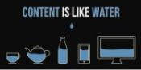

Como vimos en los capítulos de introducción en el Manual de Responsive, uno de los motivos por los que existe esta filosofía de diseño es el de no crear versiones distintas para distintos tipos de sistemas. No creamos una versión para móviles, otra para tabletas y otra para ordenadores.

Las páginas web por naturaleza son “adaptables" desde el nacimiento mismo de la Web. Para comprobar que esta hipótesis es correcta, pensemos en un archivo HTML correctamente estructurado, con encabezados, párrafos y listas. Pero sin diseño. Es decir, un archivo HTML al que no le vinculamos ninguna hoja de estilos, al que no lo maquetamos.

Es decir, somos los diseñadores mismos los que causamos el problema, con nuestro antiguo proceso de diseño (heredado de medios gráficos como el papel) y la falla está en algunas decisiones que tomamos en su transcurso.
Deberemos tener especial cuidado en que los valores de los rangos que definamos no se superpongan. Es decir, si el valor máximo de uno es 320, definiremos el inicio del siguiente rango en 321 y no en 320 exactos, ya que de lo contrario se leerán las dos hojas cuando un dispositivo tenga exactamente esa medida.
Esta técnica llamada media queries, que nos permite condicionar la lectura de distintos estilos, es la que nos abre la posibilidad a un nuevo enfoque de diseño web, que resulta ideal para dar soporte a la enorme diversidad de dispositivos existentes actualmente. Este enfoque es conocido como “diseño web adaptable” o “diseño web sensible” (responsive web design, originalmente).
- Maquetación adaptable usando Media Queries, modificando la cantidad de columnas del diseño, con grillas flexibles, adaptando los anchos dentro de cada rango.
- Imágenes y multimedia adaptables, cambiando el tamaño de las imágenes y otros elementos vinculados. No debemos olvidar, si el sitio los incluye, la adaptación de videos y animaciones, y demás contenidos complejos como mapas, tablas, slides, etc.s